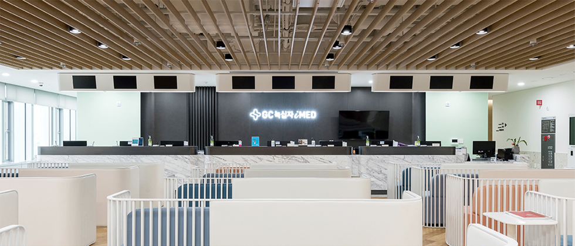

아이메드의 특별함
GC녹십자아이메드만의 특별함을 소개합니다

소개 및 특징
GC녹십자 아이메드는 첨단 의료 IT 시스템과 건강관리 프로그램을 개발하여 효율적인 건강검진을 실현하고 있습니다.
이를 통해 개인의 질병을 사전에 예측하고 더 나아가 맞춤형 건강관리 솔루션까지 제공하는
새로운 건강검진 패러다임을 선도하고 있습니다.
GC녹십자 아이메드는 건강검진과 기능의학적 진료 시스템을 접목하여 요람에서 무덤까지
최적의 건강상태를 유지할 수 있도록 평생 밀착 건강관리 서비스를 제공하고 있습니다.
- 국내 최고의 정확하고 믿을 수 있는 분석
-
GC녹십자아이메드의 의학 검사기관인 녹십자 랩은
대학병원을 비롯한 국내 최고 병원에서 검사를 수탁하고 있는
국내 최고의 신뢰 있는 검사기관입니다.
- 국제적 기준의 인증관리
- 검사의 정확성과 지속관리에 대한 국내외 인증을 취득하였습니다.
- 최신 검사장비 보유
-
128채널 CT, MRI 3.0,으로 검진 시 방사선 피폭량을 최소화 하려고
지속적인 노력을 하고 있으며 정밀검사인 PET-CT를 보유하고 있으며
방사선 피폭량 관리시스템을 갖추었습니다.
- 검진 후 체계적인 관리와 진료연계 시스템
- 검진 후 결과 관리를 위해 진료협력병원과 연결해
신속한 치료를 받을 수 있습니다.
- 국내 최고의 개인 맞춤형 유전자 검사 및 기능의학 검진
- 유전자 검사 암유전자 검사, 암취약성 검사를 통하여 걸릴 수 있는 암을 예견하거나 이를 예방하기 위해
어떤 조치가 필요한 지를 검사하고 약물유전체 검사를 통하여 자신에게 적합한 약물치료에 대해 예견하는 검사 시스템을 갖추고 있습니다.
기능의학검진이란 질병이전에 자신에게 필요한 식사요법, 운동요법, 필요한 영양소를 체질에 맞도록 처방할수있는 정보를 제공하는 검사입니다.